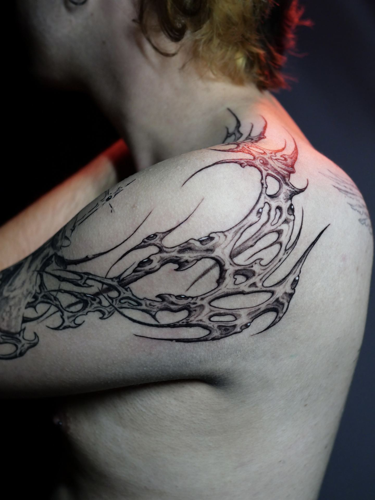
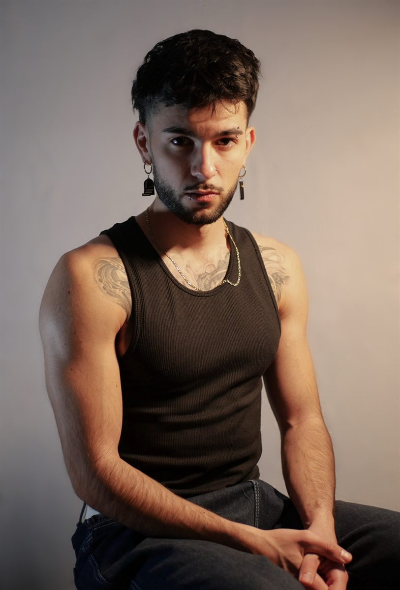

Blackwork ilustrativo
Ilustración pura sobre piel: criaturas, objetos imposibles y escenas con narrativa propia, resueltas en negro profundo.

Tatuaje oscuro con identidad. Blackwork ilustrativo, ornamental y orgánico para pieles que no buscan lo de siempre.
Cada pieza nace para ser irrepetible. Arte oscuro, orgánico y con carácter, dibujado para tu cuerpo y para nadie más. No tatúo plantillas.
Ilustración pura sobre piel: criaturas, objetos imposibles y escenas con narrativa propia, resueltas en negro profundo.
Estructuras góticas y filigranas que se construyen a medida de cada anatomía. Adorno con peso, nunca decoración vacía.
Formas que crecen con el cuerpo: espinas, huesos, raíces y criaturas que parecen haber nacido debajo de la piel.
Trazos afilados y energía primitiva releída en clave contemporánea. Contraste, movimiento y presencia.
Volumen, textura y profundidad a base de negros y grises controlados. Piezas que se leen desde lejos y se disfrutan de cerca.
Diseños propios, disponibles una sola vez. La vía rápida para llevar una pieza original de Mecha.
Los flash son diseños que dibujo por puro instinto, sin encargo, y que solo se tatúan una vez. Si uno te llama, es tuyo y de nadie más.
Publico los flash disponibles en Instagram. Escríbeme por DM o WhatsApp con el diseño que quieras y la zona del cuerpo, y lo reservamos.
Escríbeme por WhatsApp o Instagram con tu idea principal y la zona del cuerpo donde quieres la pieza. Si tienes referencias, mejor.
Agendamos una videollamada o una consulta presencial en el estudio para conocernos y entender qué buscas.
Antes de dibujar nada, estudio tu estética personal y tu proyecto. La pieza se diseña para ti, para tu cuerpo y para nadie más.
Definimos pieza, tamaño, zona y fecha. A partir de ahí, solo queda tatuar.
¿No sabes por dónde empezar?
Hacer el test del demonio →
Soy Ángel Sánchez — Mecha. Tatúo en Profano Tattoo, en Murcia.
Vengo del arte y de la ilustración, y eso define todo lo que hago: no entiendo el tatuaje como un servicio, sino como una forma de expresión con identidad. Busco constantemente un estilo propio del que sentirme orgulloso, y eso se nota en cada pieza: oscura, orgánica, ornamental y pensada para no repetirse jamás.
Si buscas algo artístico, con carácter y distinto a lo convencional, probablemente vayamos a entendernos.
Mecha Ángel Sánchez · Profano Tattoo · Murcia
Para que la primera conversación sirva de verdad, escríbeme con tu idea principal, la zona del cuerpo y si buscas flash o diseño personalizado.